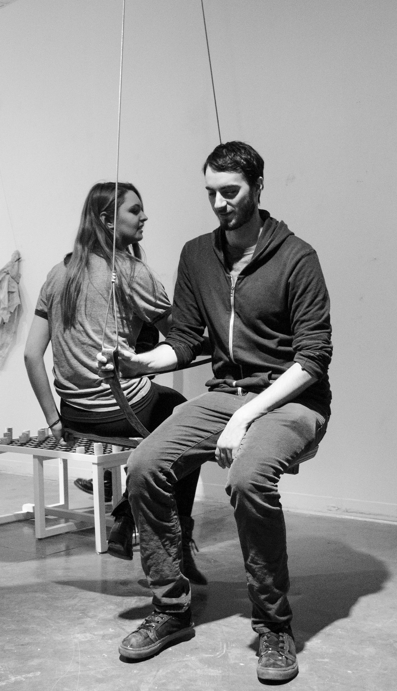

involving me, revolving you
2016steel, wood
24" x 36" x 14"
A swing that requires coordination between two people to maintain balance. For some, being unable to look at a person while talking with them may be a challenge. For others, an excuse to break eye contact may be a relief. In this way, the swings facilitates conversation between two people who may know each other very well or not at all.